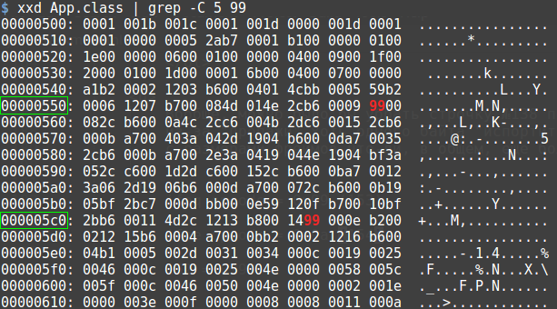

Байт-код виртуальной машины Java, незамутненный посредством обфускации и прочих средств защиты, несложен для понимания. В то же время взлом мало-мальски серьезной защиты, кроме аналитических навыков, требует умения пользоваться специальными инструментами: дизассемблерами, отладчиками и т.д. Об этом написано в блестящей серии статей Hacking Java Bytecode for Programmers. В рамках нашей заметки мы возьмемся за задачу полегче: вскроем простейший Crackme с использованием одних лишь подручных средств. А именно:
$ javap -version 1.8.0_162
$ xxd -version xxd V1.10 27oct98 by Juergen Weigert
Версии компилятора и среды выполнения Java соответствуют версии javap.
Ничего сложного здесь нет:
import java.util.Scanner;
import java.util.Objects;
public class App {
private static final String VALID_SERIAL_NUMBER = "qwerty";
public static void main(String ignoredArgs[]) {
System.out.println( "****************************************\n" +
"* SuperMega Application by flaz14 Inc. *\n" +
"****************************************\n" +
"\n" +
"Hello, User!" +
"\n" +
"Please enter your Serial Number below\n" +
"and hit ENTER: " +
"\n");
String rawSerialNumber = null;
try (Scanner keyboard = new Scanner(System.in, "UTF-8")) {
if (keyboard.hasNextLine())
rawSerialNumber = keyboard.nextLine();
}
if (rawSerialNumber == null)
throw new IllegalStateException("Internal error: serialNumber " +
"should not be null.");
String serialNumber = rawSerialNumber.trim();
if ( Objects.equals(serialNumber, VALID_SERIAL_NUMBER) )
System.out.println( "\nCongratulations! You've successfully\n" +
"activated your copy of the application.");
else
System.out.println( "\nSorry, the serial you've entered is invalid.");
}
}
Вот пример неудачного запуска:
$ javac App.java && java App **************************************** * SuperMega Application by flaz14 Inc. * **************************************** Hello, User! Please enter your Serial Number below and hit ENTER: 12345 Sorry, the serial you've entered is invalid.
Мы просто считываем с клавиатуры введенный пользователем серийный номер как строку. Затем сравниваем ее с эталонной и выводим на экран соответствующие сообщения.
Первая утилита, которую стоит запустить перед анализом чего-либо - это strings (полный вывод приведен в файле App.class.strings.txt):
$ strings --all --bytes=3 App.class VALID_SERIAL_NUMBER Ljava/lang/String; ConstantValue <init> ()V
Строка VALID_SERIAL_NUMBER сразу наводит на мысль, что эталонный серийный номер "зашит"
непосредственно в программе. А поскольку количество
текстовых строк в нашем .class-файле ограничено (не больше тысячи), есть смысл не ковыряться долго в байт-коде,
выуживания ключ. А просто перебрать извлеченные с помощью утилиты strings строчки.
Написанный на скорую руку Python-скрипт
strings_bf.py
делает это:
$ ./strings_bf.py String [qwerty] is valid serial number.
qwerty и есть наш серийный ключ (см. листинг 1).
Конечно, это не настоящий взлом. Тем не менее, возможности полного перебора отметать полностью нельзя. В конце-концов, перебор в режиме off-line - не такая уж безнадежная затея.
Посмотрим на байт-код глазами утилиты javap (полный вывод см. в файле App.class.strings.txt):
$ javap -v App.class
...
133: ldc #19 // String qwerty
135: invokestatic #20 // Method java/util/Objects.equals:(Ljava/lang/Object;Ljava/lang/Object;)Z
138: ifeq 152
141: getstatic #2 // Field java/lang/System.out:Ljava/io/PrintStream;
144: ldc #21 // String \nCongratulations! You've successfully\nactivated your copy of the application.
146: invokevirtual #4 // Method java/io/PrintStream.println:(Ljava/lang/String;)V
149: goto 160
152: getstatic #2 // Field java/lang/System.out:Ljava/io/PrintStream;
155: ldc #22 // String \nSorry, the serial you've entered is invalid.
157: invokevirtual #4 // Method java/io/PrintStream.println:(Ljava/lang/String;)V
160: return
...
Строка №138 соответствует условному переходу к печати сообщения об ошибке. Чтобы направить программу в нужное русло, надо что-то сделать со строкой №138. Варианты:
ifeq на антоним, т.е. ifne. Программа "проглотит"
неверный серийный номер, поскольку перехода на строку №152 не будет. Т.е. проверка будет всегда
проходить по "успешной" ветке выражения if-else, как будто бы мы написали в исходнике не
if ( Objects.equals(serialNumber, VALID_SERIAL_NUMBER) ), а
if ( !Objects.equals(serialNumber, VALID_SERIAL_NUMBER) ).
152 в 141. Это более экзотический
способ, нежели вышеприведенный, поскольку его нельзя выразить изменениями в исходном коде.
Вообще, можно было бы убрать строчку №138 полностью (или заменить на nop). Но это в теории. На
практике
из-за "пропажи" хоть одного байта "испортится" весь .class-файл. Для исправления ситуации придеться
подгонять оставшийся байт-код (вставлять несколько nop-ов подряд что-ли?..).
Так что более перспективным выглядит первый способ.
Итак, мы решили изменить код операции. Каждому коду операции в class.-файле соответствует один байт (собственно, отсюда и происходит термин "байт-код"). Т.е. требуется лишь заметить в файла один-единственный байт. Но какой именно? javap ничего не говорит от том, где в .class-файле находится строка №138. По-хорошему, на этом этапе пора взять в руки дизассемблер. Он выяснит сопоставит "ассемблерный" код в стиле javap с реальным байт-кодом и выдаст положение заветной инструкции в .class-файле. Но мы не хакеры, а ламеры. И мы не будем пользоваться дизассемблером и прочими штуками. А вернемся... к методу грубой силы!
Как следует из Java bytecode instruction listings, атнипод ifeq - это ifne. А их байтовые значения отличаются всего лишь на единицу:
ifeq opcode = 0x99 (153) ifne opcode = 0x9a (154)
Посмотрим, где же в .class-файле находится байт 0x99:

Итак, всего два вхождения! Стоит ли ради них запускать дизассемблер? Вряд ли. Проще пропатчить сначала первого кандитада. Затем запустить программу, ввести какой-нибудь серийник и посмотреть, появится ли надпись об успешной активации. Если не получится, проделать то же со вторым претендентом.
Для пущей атмосферы хакерства будем патчить байт-код без hex-редактора. А прямо из комадной строки как это предложено в ответе CLI: Write byte at address (hexedit/modify binary from the command line). Надо лишь узнать смещение seek.
По умолчанию xxd выводит содержимое файла в режиме шестнадцати октетов (один октет - восемь двоичных разрядов, т.е. один байт, если говорить по-русски). Для первого кандидата:
seek = 0x00000550 + 14 = 1360 + 14 = 1374
Для второго:
seek = 0x000005c0 + 11 = 1472 + 11 = 1483
Тогда наши "патчи" будут выглядеть так:
# Кандидат 1 printf '\x9a' | dd of=App.class bs=1 seek=1374 count=1 conv=notrunc # Кандидат 2 printf '\x9a' | dd of=App.class bs=1 seek=1483 count=1 conv=notrunc
Перекомпилируем исходник и попробуем:
$ javac App.java $ printf '\x9a' | dd of=App.class bs=1 seek=1374 count=1 conv=notrunc 1+0 records in 1+0 records out 1 byte copied, 0,000152817 s, 6,5 kB/s $ java App **************************************** * SuperMega Application by flaz14 Inc. * **************************************** Hello, User! Please enter your Serial Number below and hit ENTER: invalid_serial_number Exception in thread "main" java.lang.IllegalStateException: Internal error: serialNumber should not be null. at App.main(App.java:23)
Что-то пошло не так :) Значит, первый кандидат не подходит. Возьмемся за второго:
$ javac App.java $ printf '\x9a' | dd of=App.class bs=1 seek=1483 count=1 conv=notrunc 1+0 records in 1+0 records out 1 byte copied, 0,000219027 s, 4,6 kB/s $ java App **************************************** * SuperMega Application by flaz14 Inc. * **************************************** Hello, User! Please enter your Serial Number below and hit ENTER: invalid_serial_number Congratulations! You've successfully activated your copy of the application.
Ура! Заработало!
После патча подойдет любая строка, кроме изначально правильного ключа, т.е:
$ java App **************************************** * SuperMega Application by flaz14 Inc. * **************************************** Hello, User! Please enter your Serial Number below and hit ENTER: qwerty Sorry, the serial you've entered is invalid.
Так что идеального патча не получилось. Ну и ладно. Как бы то ни было, мы победили Crackme почти голыми руками. И хоть процесс "взлома" выглядит смешным (и бесполезным с практической точки зрения), он лишний раз подтверждает, что возможности полного перебора не стоит недооценивать.